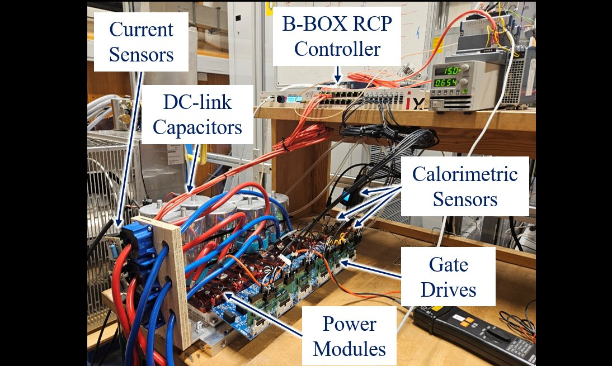
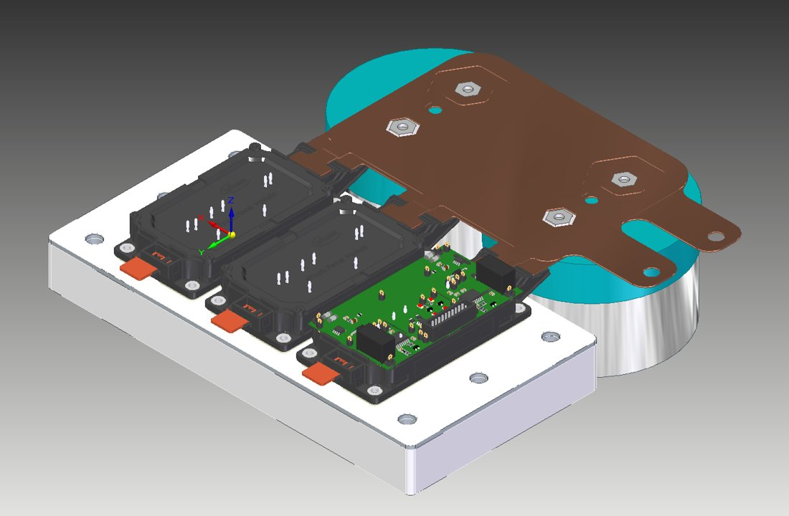
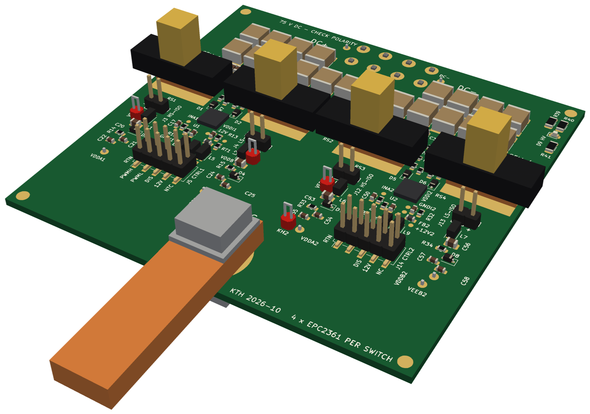
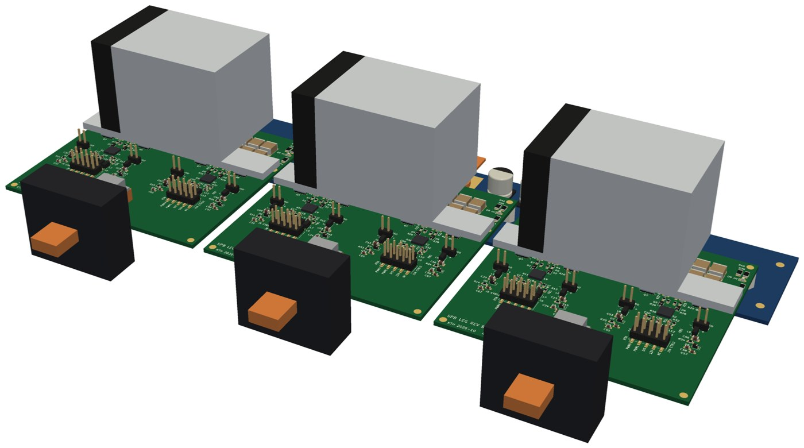

Overview of KTH Solution for Automotive Applications
A 1200 V, 300 kW traction drive: what the 2 kV and 1.7 kV SiC prototypes showed at a 1.2 kV DC link, why we stack low-voltage GaN cells in a stacked polyphase bridge (SPB), the design results of the GaN building block, and where prototype v1 and the machine work stand.





Higher voltage helps charging, cables and the machine. The cost lands on the semiconductors: higher blocking voltage, higher switching loss and more insulation stress.
Charging: current and cable loss
- Same energy at 1200 V instead of 800 V: about 33 % less current and 56 % less I²R loss in the charging cable.
- Or keep the current density and cut the copper: about 33 % less cable mass.
- Megawatt charging (MCS) allows up to 1250 V, so a 1.2 kV battery can use it fully.
| Public example | DC link | Power |
|---|---|---|
| Porsche Taycan | 800 V class | up to 700 kW |
| Lucid Air | 924 V | up to 828 kW |
| Megawatt Charging System (trucks) | up to 1250 V | > 1 MW |
| KTH SiC prototypes | 1.2 kV | 250–300 kW |
I²R scaling for equal power and the same conductor. The 800 V reference is fixed.

| Prototype 1 | Prototype 2 | |
|---|---|---|
| SiC modules | Infineon FF3MR20KM1H, 62 mm | eTruck half-bridge modules |
| Device voltage | 2.0 kV | 1.7 kV |
| DC link | 1.2 kV | 1.2 kV |
| Rated power | 250 kW | ≈ 300 kW |
| Inverter volume (components) | 5.1 L | 4.14 L |
| Efficiency | 99.12 % measured, full load | 99.3–99.7 % map, 5–20 kHz |
Prototype 2: rated power not stated in the source, ≈ 300 kW is 72 kW/L × 4.14 L; efficiency map at 1190 V, M = 1.15, 50–200 Arms, from the calorimetric loss data.

- Each cell is an ordinary two-level three-phase bridge with its own capacitor.
- The cells are in series on the DC link: each sees Vdc/N.
- Each cell feeds its own three-phase winding set; all sets sit in one stator and drive one rotor.
- The same DC current flows through every cell, so the cells share the power equally when their winding sets carry equal currents.
Proposed at KTH (Norrga et al., 2013).
Click a cell in the stack or a coil group in the stator to follow one cell to its winding set.

- Each SPB cell controls its own winding set, so the inverter can change the phase pattern between sets, and with it the pole number.
- Many poles give high torque at low speed; fewer poles reduce frequency and iron loss at high speed. A truck could use both from one machine.
- Two cells are enough to re-phase a 36-slot 12/6-pole winding, so pole changing does not force a large cell count.
- Preliminary no-load FEA of a hybrid-excited rotor shows both field settings. Loaded FEA, losses and drive-cycle results are planned work.